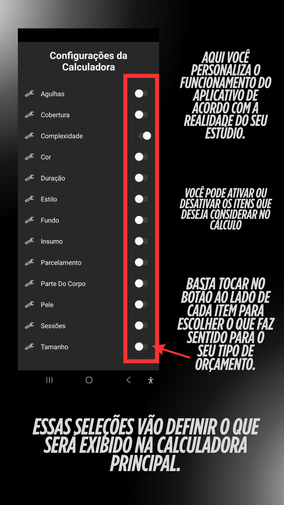
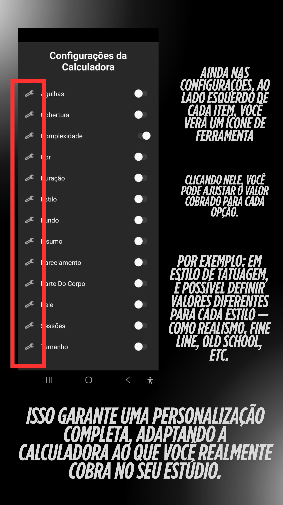
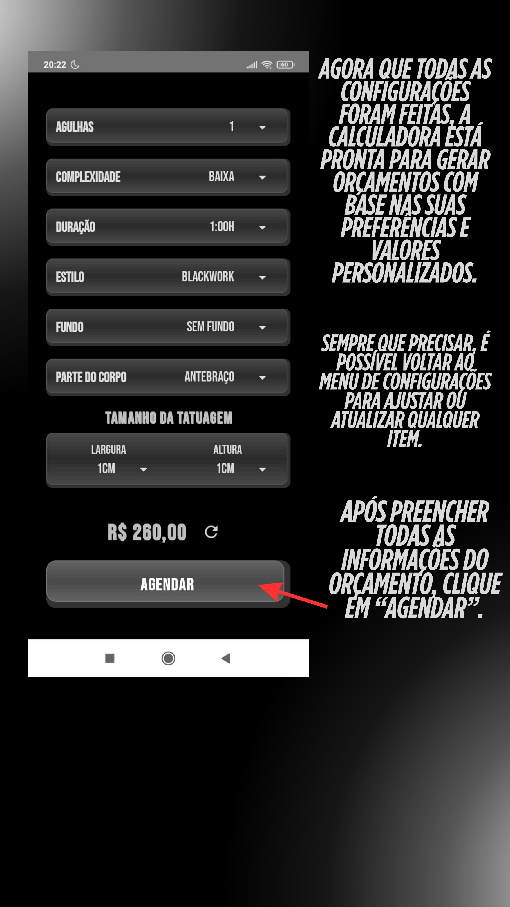
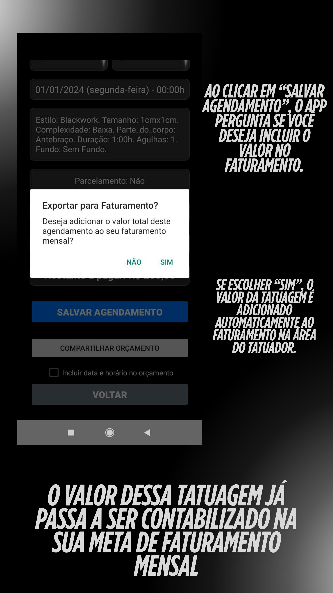

Por que o Calculadora Tattoo é para você?
Chega de perder tempo com orçamentos manuais, desorganização financeira e clientes insatisfeitos. O Calculadora Tattoo foi criado para simplificar sua vida e profissionalizar seu negócio.
Orçamento Rápido e Preciso
Calcule o preço das suas tatuagens de forma eficiente, levando em conta todos os detalhes, como tamanho, tempo e materiais. Apresente um valor profissional e justo ao seu cliente em segundos.
Organização Financeira Completa
Controle seu faturamento mensal, acompanhe despesas e visualize seu saldo em tempo real. Separe suas contas em pessoal, casa e estúdio para ter clareza total sobre suas finanças.
Agenda Inteligente
Gerencie seus agendamentos de forma prática e intuitiva. Tenha uma visão clara dos seus compromissos e otimize seu tempo.
-Desenvolvido por Tatuador para Tatuadores
Este app foi pensado nas suas necessidades reais. Cada funcionalidade foi criada para resolver os desafios do dia a dia de quem vive de tatuagem.

O que você recebe:
🧮 Calculadora de orçamento
📆 Agenda integrada
🚀 Atualizações futuras incluídas
Calculadora Inteligente: Orçamentos Sem Erros
Crie orçamentos precisos em segundos, adaptados ao seu estilo de trabalho.
Orçamento Rápido e Detalhado

Nesta imagem, você vê a tela da Calculadora de Orçamento. Nela, é possível inserir dados como complexidade, duração e tamanho da tatuagem, para que o app calcule o valor final de forma automática e eficiente.
Personalize Suas Configurações
Esta tela mostra as configurações da calculadora, onde você pode personalizar o aplicativo de acordo com a realidade do seu estúdio. É possível ativar ou desativar itens como agulhas, cobertura, cor, duração, estilo, entre outros, para que sejam considerados no cálculo do orçamento.
Ajuste Fino dos Valores
Nesta visualização, é possível ajustar o valor cobrado para cada opção dos itens configurados. Por exemplo, em "Estilo de Tatuagem", você pode definir valores diferentes para estilos como Realismo, Fine Line ou Old School, garantindo uma personalização completa e adaptando a calculadora ao que você realmente cobra no seu estúdio.
Orçamento Finalizado em Segundos
Depois de preencher todas as informações e configurações, esta imagem ilustra o resultado final do orçamento. O aplicativo exibe o valor calculado, pronto para você seguir para a próxima etapa, que é o agendamento.
Agendamento Facilitado: Da Proposta ao Compromisso
Transforme orçamentos em agendamentos de forma prática e organizada.
Gerencie Seus Compromissos com Facilidade

Ao clicar em "Agendar", você é direcionado para esta tela de agendamento. Aqui, você pode inserir o nome do cliente, a data e o horário desejado, além de revisar um resumo completo do orçamento com todos os insumos e configurações.
Integração Inteligente com o Faturamento
Depois de salvar um agendamento, o aplicativo pergunta se você deseja incluir o valor total no seu faturamento mensal. Se você escolher "SIM", o valor da tatuagem é adicionado automaticamente à sua meta de faturamento na Área do Tatuador.
Sincronize com o Calendário do seu Celular

Após a confirmação do agendamento, o app oferece a opção de adicionar o compromisso diretamente ao calendário do seu celular. Isso ajuda a manter todos os seus atendimentos organizados e reunidos em um só lugar, facilitando o controle diário.
Área do Tatuador: Seu Estúdio na Palma da Mão
Para um controle financeiro completo e uma visão clara do seu negócio, a Área do Tatuador oferece acompanhamento de metas e despesas.
Pronto para Revolucionar a Gestão do seu Estúdio?
Chega de burocracia e perdas financeiras. O Calculadora Tattoo é a ferramenta que você precisa para profissionalizar seu negócio e focar no que realmente importa: a sua arte.
 Quero meu acesso agora
Quero meu acesso agora